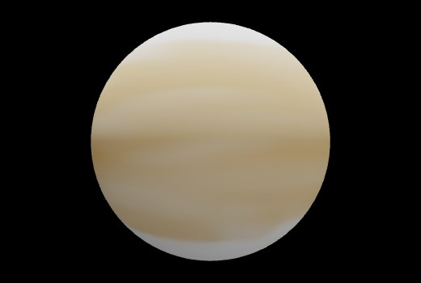
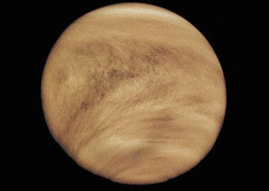
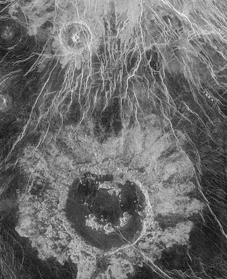

VENÜS
Venüs, Güneş’e en yakın gezegen olmamasına rağmen en sıcak gezegendir. Bunun sebebi yoğun
sera gazları içeren bir atmosferinin olmasıdır. Bu atmosfer, yoğun olarak karbon monoksit
ve sülfürik asite sahip bulutlardan oluşur. Bu gazlar, Güneş’ten gelen sıcaklığı hapseder. Böylece
Venüs’ün sıcaklığını yükseltir. Eğer küresel ısınma kontrol altına alınmazsa, gezegenimizde de
buna benzer bir atmosfer ile karşılaşabiliriz.

Venüs Gezegeni (Kaynak:NASA)
Venüs çok aktif bir gezegendir. Venüs’ün yüzeyinde dağlar ve volkanlar bulunur. Venüs’ün
boyutları Dünya’ya çok yakındır. Venüs’ü diğer gezegenlerden ayıran önemli bir özelliği, kendi etrafında
Dünya ve diğer birçok gezegenin tersi yönünde dönmesidir. Venüs’ün kendi etrafında dönmesini
tamamlaması Dünya günü olarak yaklaşık 243 gün sürer. Fakat Güneş’e çok yakın
olmasından dolayı bir yıl daha çabuk geçer ve 225 Dünya günü sürer. Kendi etrafında ve Güneş’in
etrafında dönme süreleri birbirine yakın olduğu için Venüs’ün bir günü Dünya’dakinden farklıdır.
Venüs gün doğumu 117 Dünya gününde bir olur ve bu da Venüs yılına göre yılda sadece 2 kez
gün doğumu olduğu manasına gelir. Dünya’ya göre ters yönde dönmesinden dolayı Güneş batıdan doğar ve doğudan batar.


Venüs'ün yüzeyinde 72km genişliğinde bir krater (Kaynak: NASA)
Kaynak: NASA